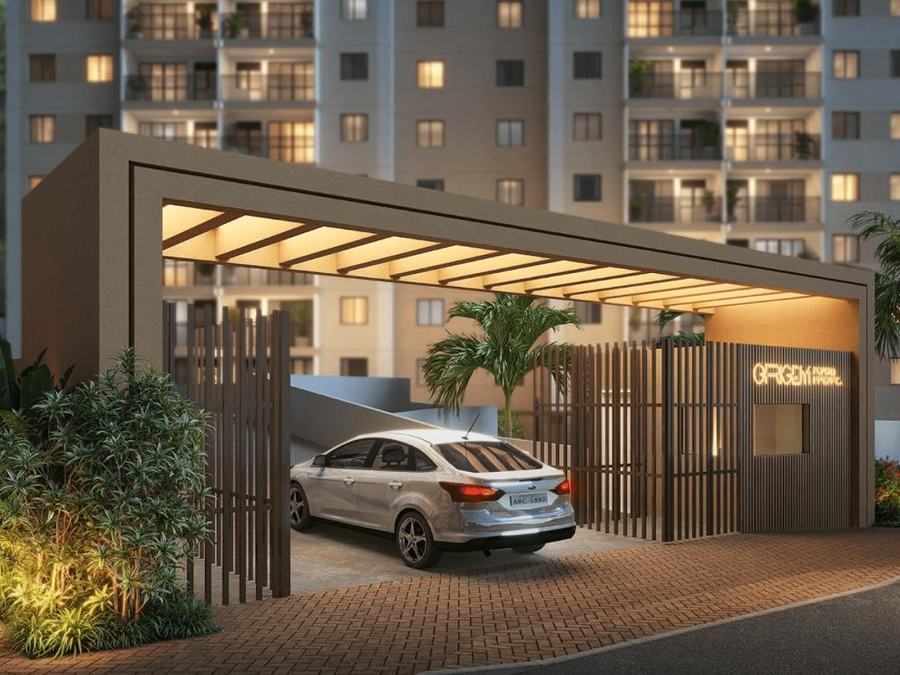
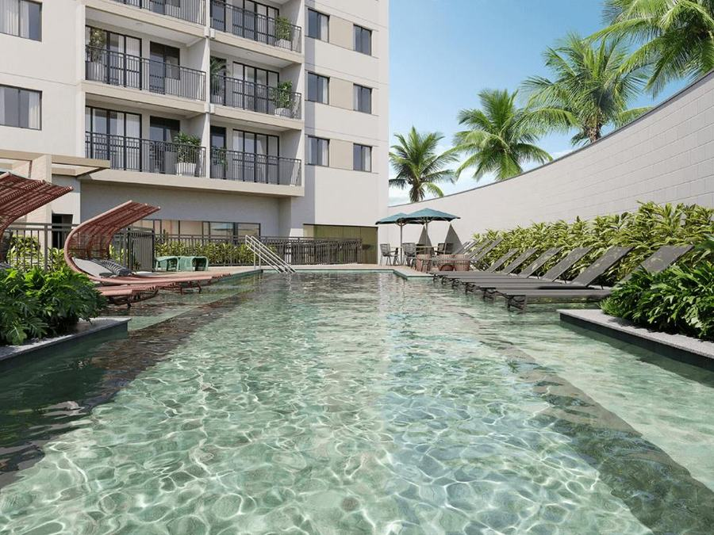
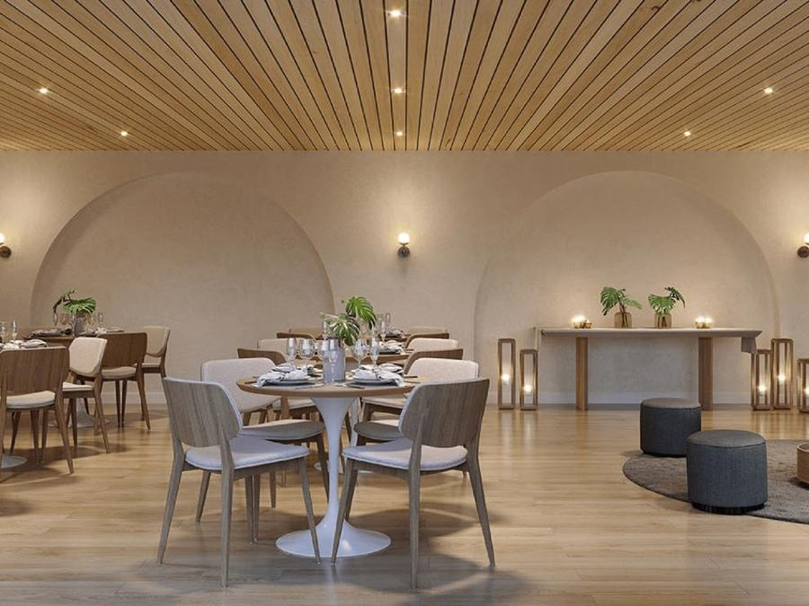

Galeria

Fachada, portaria e área de lazer



Apartamentos de 2 e 3 quartos, 76 m², ao lado da Quinta da Boa Vista, a 2 minutos a pé da UERJ e a poucos minutos do Maracanã — onde a tradição carioca se encontra com a transformação urbana do Porto Maravilha.
*Valores, entrega e condições sujeitos a alteração conforme tabela vigente da incorporadora. Memorial de Incorporação prenotado sob o nº 370270.
Um dos maiores parques do Rio, praticamente na porta de casa.
Barcas, ônibus, trem, metrô e rodoviária a poucos minutos — fácil acesso à Av. Brasil, Radial Oeste e Linha Vermelha.
Piscina adulto e infantil, quadra de esportes, sauna, salão de festas e de jogos, espaço gourmet e minimercado.
Incorporadora com mais de 40 anos de mercado e 240 mil unidades entregues.



*Plantas, metragens e valores meramente informativos, sujeitos ao memorial de incorporação e à tabela vigente. Confirme com a corretora antes de decidir.
Quinta da Boa Vista (ao lado), UERJ (2 min andando), Hospital Quinta D'Or (2 min), Maracanã (3 min), Metrô (3 min).
Extra Mercado (5 min), Colégio Pedro II (7 min), Centro de Tradições Nordestinas (5 min), AquaRIO (7 min).
Acesso rápido à Av. Brasil, Radial Oeste e Linha Vermelha, com barcas, ônibus, trem, metrô e rodoviária na região.
Terminal Intermodal a apenas 4 minutos de carro.
Me conta sua renda e o que você paga de aluguel hoje — eu te mostro se o Origem Porto Imperial cabe no seu bolso, sem compromisso.
Simular agora no WhatsAppNa Rua Fonseca Teles, 120, em São Cristóvão, no Porto Maravilha, ao lado da Quinta da Boa Vista e a 2 minutos a pé da UERJ.
O empreendimento está em obras avançadas, com entrega prevista para outubro de 2027. A Crisla confirma o cronograma atualizado da obra.
As unidades partem de R$ 550 mil. As condições de entrada variam conforme renda e forma de pagamento — a Crisla faz uma simulação gratuita pelo WhatsApp.
A possibilidade de uso do FGTS depende das condições vigentes do fundo e do agente financiador — a Crisla confirma seu caso específico.